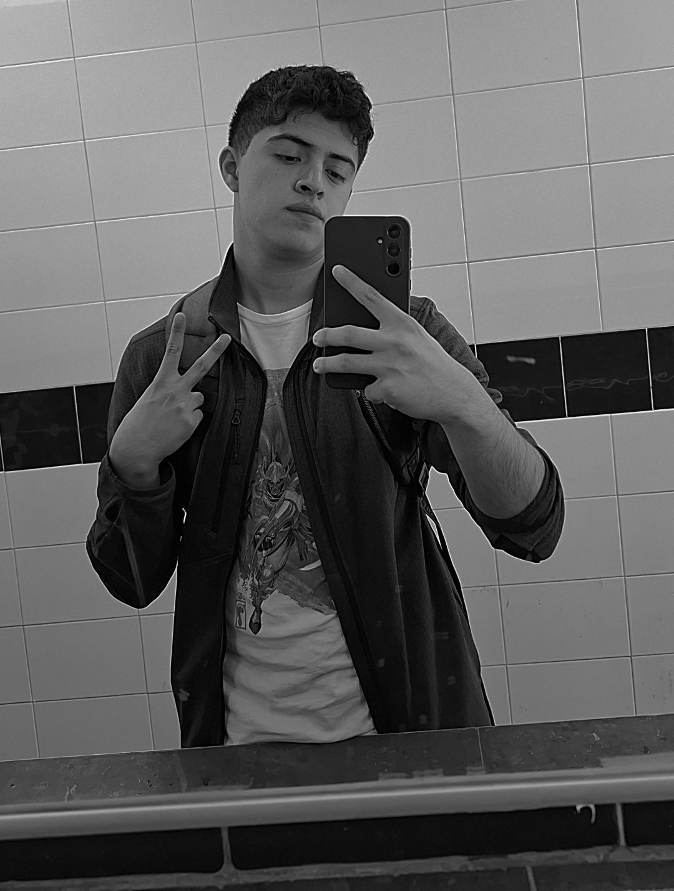

Sebastian Mendoza Rosas
Estudiante de la FES Aragon en la carrera de Ingeniería en Computación
Información Académica
Semestre: 6° Semestre
Mis tecnologías favoritas
Big Data
Ciberseguridad
Blockchain
Cloud Computing
Lenguajes que más manejo
Java
Python
SQL
PHP
Hobbies e Intereses
Fanatico de la mayoria de los deportes como Beisbol, F1, Futbol, Basketball, etc, asi como de los coches. A su vez me gusta conocer nuevos lugares, asi como los idiomas y datos historicos. También suelo jugar juegos de mesa y viedeojuegos.